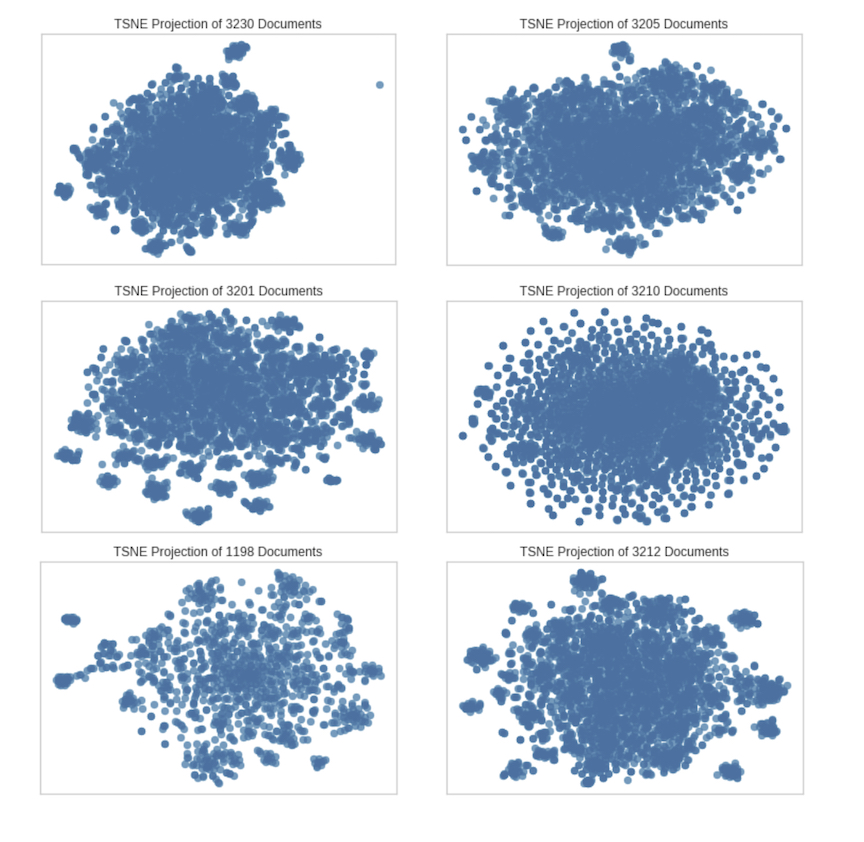

The next step in our exploration of Twitter data is to use unsupervised clustering for a qualitative analysis of a users overall activity and then eventually for topic modeling.
In order to look at vectorized word data a dimensionality reduction is performed using t-distributed stochastic neighbor embedding(t-SNE). It is a 2D representation of a multi-dimensional dataset. The unique shape of each plot gives us information about how this person directs and words their comments. Small outer clusters represent very unique topics. The result is like a person’s Twitter finger print. This method is helpful in a qualitative sense but the calculations involved in the dimensionality reduction for t-SNE are so costly.
We can take a list of users tweets and conduct t-SNE using this code:
Here is an example of 6 user account tweet visualized by this process. 
The grouping of the bunches is calculated by the words in a sentence and their position in a vectorized multidimensional space. What is interesting is that the right middle graph looks totally different. Something about this users Tweets is more uniformly distributed. I am willing to be it is automated and maybe in a later blog I will investigate this.
Detecting automated accounts that are behaving outside of the the bounds of the allowable automated behavior has become somewhat of an art form. If you are not familiar with the Twitter API there is actually a large amount of allowable automation. But still influencers try to use these platforms for political and economic reasons and a constant arms race between those wanting to automate accounts inappropriately and those trying to detect them rages on. Utilizing unique and creative applications of ML tools has lead to the ability to identify these types of accounts.